MGMT 47400: Predictive Analytics
Statistical Learning
Overview
- XXXX
- XXX
XXX
What is Statistical Learning?
Shown are Sales vs TV, Radio, and Newspaper, with a blue linear-regression line fit separately to each.
Can we predict Sales using these three?
Perhaps we can do better using a model:
\[ \text{Sales} \approx f(\text{TV}, \text{Radio}, \text{Newspaper}) \]
Notation
Sales is a response or target that we wish to predict. We generically refer to the response as \(Y\).
TV is a feature, or input, or predictor; we name it \(X_1\).
Likewise, name Radio as \(X_2\), and so on.The input vector collectively is referred to as:
\[ X = \begin{pmatrix} X_1 \\ X_2 \\ X_3 \end{pmatrix} \]
We write our model as:
\[ Y = f(X) + \epsilon \]
where \(\epsilon\) captures measurement errors and other discrepancies.
What is \(f(X)\) Good For?
With a good \(f\), we can make predictions of \(Y\) at new points \(X = x\).
Understand which components of \(X = (X_1, X_2, \ldots, X_p)\) are important in explaining \(Y\), and which are irrelevant.
- Example: Seniority and Years of Education have a big impact on Income, but Marital Status typically does not.
Depending on the complexity of \(f\), understand how each component \(X_j\) affects \(Y\).
Is There an Ideal \(f(X)\)?

In particular, what is a good value for \(f(X)\) at a selected value of \(X\), say \(X = 4\)?
A good value is:
\[ f(4) = E(Y|X=4) \]
where \(E(Y|X=4)\) means the expected value (average) of \(Y\) given \(X=4\).
This ideal \(f(x) = E(Y|X=x)\) is called the regression function.
The Regression Function \(f(x)\)
Also defined for a vector \(\mathbf{X}\); for example, \[ f(\mathbf{x}) = f(x_1, x_2, x_3) = \mathbb{E}[\,Y \mid X_1 = x_1,\, X_2 = x_2,\, X_3 = x_3\,]. \]
Ideal or optimal predictor of \(Y\) in terms of mean-squared prediction error:
\[ f(x) = \mathbb{E}[Y \mid X = x] \quad\text{minimizes}\quad \mathbb{E}[(Y - g(X))^2 \mid X = x] \text{ over all } g \text{ and for all points } X = x. \]
\(\varepsilon = Y - f(x)\) is the irreducible error—even if we knew \(f(x)\), we would still make prediction errors because at each \(X = x\) there is typically a distribution of possible \(Y\) values.
For any estimate \(\hat{f}(x)\) of \(f(x)\),
\[ \mathbb{E}\bigl[(Y - \hat{f}(X))^2 \mid X = x\bigr] = \underbrace{[\,f(x) - \hat{f}(x)\,]^2}_{\text{Reducible}} \;+\; \underbrace{\mathrm{Var}(\varepsilon)}_{\text{Irreducible}}. \]
How to Estimate \(f\)
Often, we lack sufficient data points for exact computation of \(E(Y|X=x)\).
So, we relax the definition:
\[ \hat{f}(x) = \text{Ave}(Y|X \in \mathcal{N}(x)) \]
where \(\mathcal{N}(x)\) is a neighborhood of \(x\).
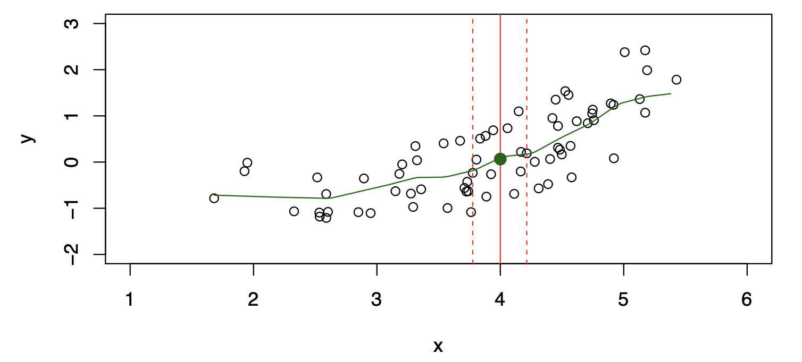
Nearest Neighbor Observations
Nearest neighbor averaging can be pretty good for small \(p\) — i.e., \(p \le 4\) — and large-ish \(N\).
We will discuss smoother versions, such as kernel and spline smoothing, later in the course.
Nearest neighbor methods can be lousy when \(p\) is large. Reason: the curse of dimensionality. Nearest neighbors tend to be far away in high dimensions.
We need to get a reasonable fraction of the \(N\) values of \(y_i\) to average in order to bring the variance down (e.g., 10%).
A 10% neighborhood in high dimensions is no longer truly local, so we lose the spirit of estimating \(\mathbb{E}[Y \mid X = x]\) via local averaging.
The curse of dimensionality
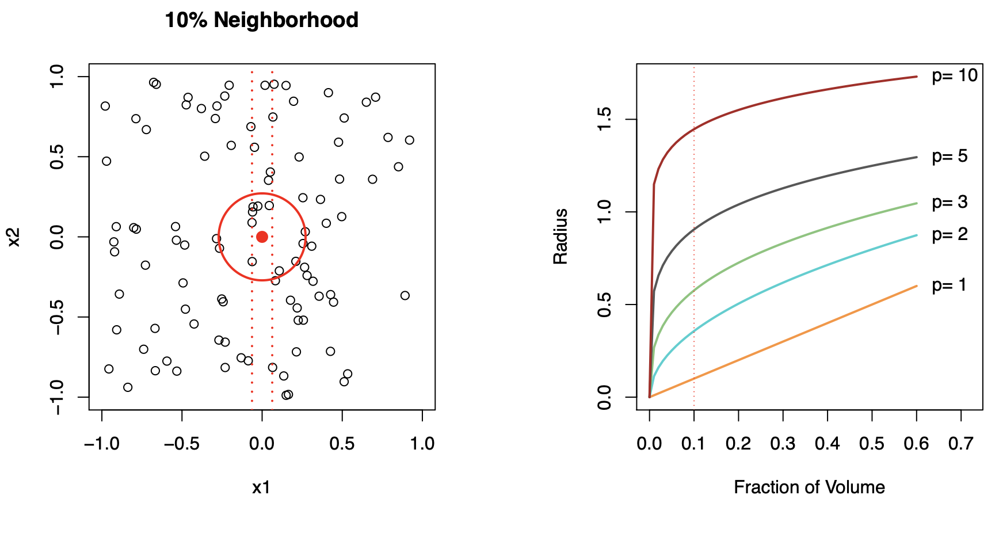
Parametric and Structured Models
The linear model is a key example of a parametric model:
\[ f_L(X) = \beta_0 + \beta_1X_1 + \beta_2X_2 + \ldots + \beta_pX_p \]
A linear model is specified in terms of \(p+1\) parameters (\(\beta_0, \beta_1, \ldots, \beta_p\)).
We estimate the parameters by fitting the model to training data.
Although it is almost never correct, it serves as a good and interpretable approximation to the unknown true function \(f(X)\).
Comparison of Models
Comparison of Models
\[ \hat{f}_L(X) = \hat{\beta}_0 + \hat{\beta}_1X \]
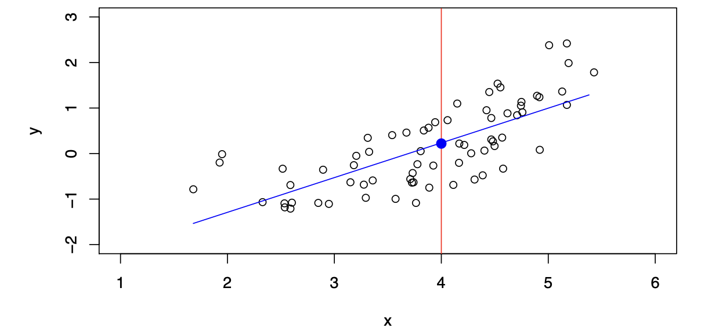
The linear model gives a reasonable fit here.
\[ \hat{f}_Q(X) = \hat{\beta}_0 + \hat{\beta}_1X + \hat{\beta}_2X^2 \]
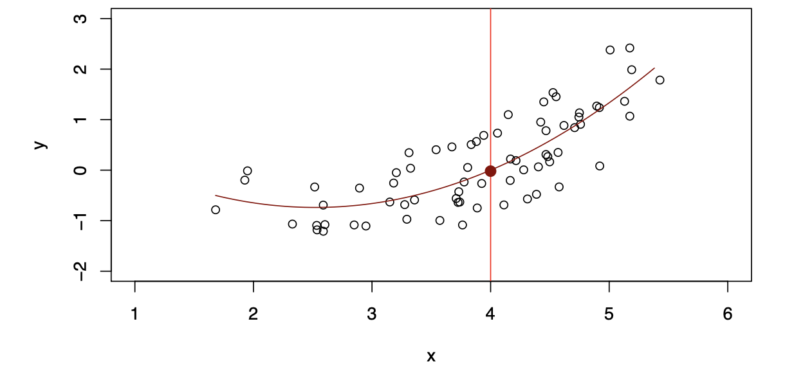
Quadratic models may fit slightly better than linear models in some cases.
Simulated Example

Simulated example. Red points are simulated values for income from the model:
\[ \text{income} = f(\text{education}, \text{seniority}) + \epsilon \]
\(f\) is the blue surface.
Linear Regression Fit
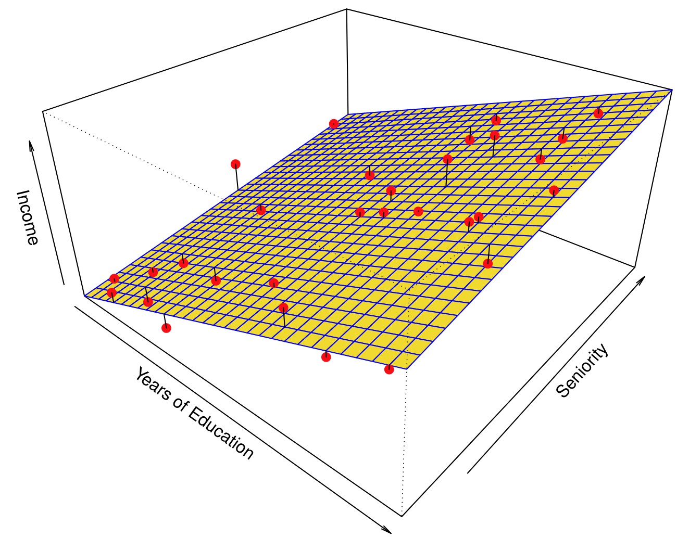
Linear regression model fit to the simulated data:
\[ \hat{f}_L(\text{education}, \text{seniority}) = \hat{\beta}_0 + \hat{\beta}_1 \times \text{education} + \hat{\beta}_2 \times \text{seniority} \]
Flexible Regression Model Fit
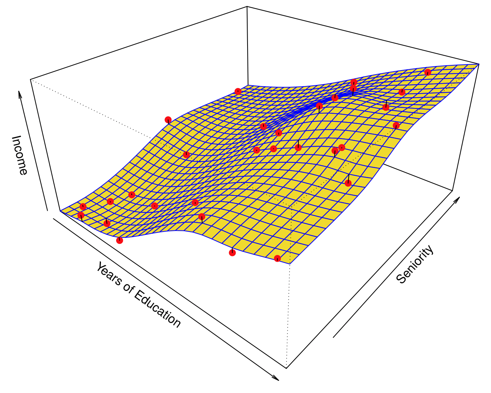
More flexible regression model \(\hat{f}_S(\text{education}, \text{seniority})\) fit to the simulated data. Here we use a technique called a thin-plate spline to fit a flexible surface.
We control the roughness of the fit.
Overfitting
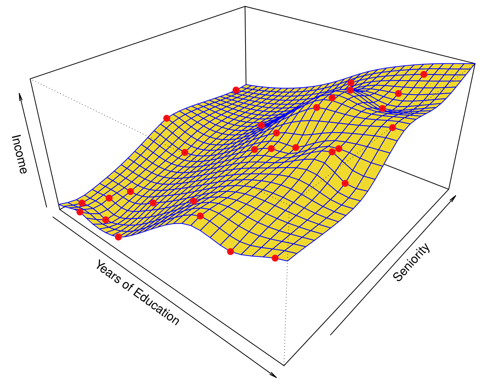
Even more flexible spline regression model \(\hat{f}_S(\text{education}, \text{seniority})\) fit to the simulated data.
The fitted model makes no errors on the training data! This is known as overfitting.
Some Trade-offs
Prediction accuracy versus interpretability:
- Linear models are easy to interpret; thin-plate splines are not.
Good fit versus over-fit or under-fit:
- How do we know when the fit is just right?
Parsimony versus black-box:
- Prefer simpler models involving fewer variables over black-box predictors.
Flexibility vs. Interpretability
Trade-offs between flexibility and interpretability:

- High interpretability: Subset selection, Lasso
- Intermediate: Least squares, Generalized Additive Models, Trees
- High flexibility: Bagging, Boosting, Support Vector Machines
Assessing Model Accuracy
Suppose we fit a model \(\hat{f}(x)\) to some training data \(Tr = \{x_i, y_i\}_{i=1}^N\), and we wish to evaluate its performance:
- Compute the average squared prediction error over the training set \(Tr\):
\[ \text{MSE}_{Tr} = \text{Ave}_{i \in Tr}[(y_i - \hat{f}(x_i))^2] \]
However, this may be biased toward more overfit models.
- Instead, use fresh test data \(Te = \{x_i, y_i\}_{i=1}^M\):
\[ \text{MSE}_{Te} = \text{Ave}_{i \in Te}[(y_i - \hat{f}(x_i))^2] \]
Bias-Variance Trade-off
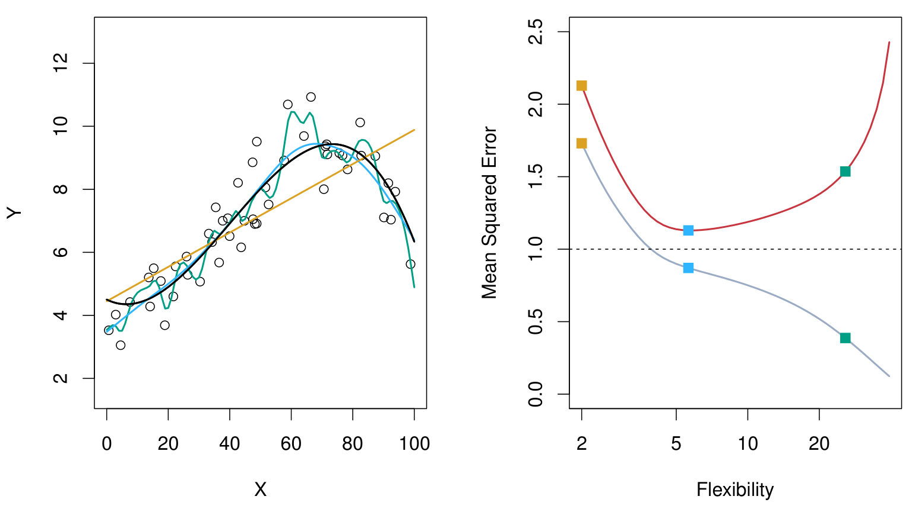
Black curve is the truth. Red curve on right is MSE on the test set (\(\text{MSE}_{Te}\)), grey curve is MSE on the training set (\(\text{MSE}_{Tr}\)).
Orange, blue, green curves/squares correspond to fits of different flexibilities.
Smoother Truth Example

Here the truth is smoother, so smoother fits and linear models perform well.
Noisy, Wiggly Truth Example

Here the truth is wiggly and the noise is low. More flexible fits perform the best.
Bias-Variance Trade-off
Suppose we have fit a model \(\hat{f}(x)\) to some training data \(\text{Tr}\), and let \((x_0, y_0)\) be a test observation drawn from the population.
If the true model is
\[ Y = f(X) + \varepsilon \quad \text{(with } f(x) = \mathbb{E}[Y \mid X = x]\text{)}, \]
then
\[ \mathbb{E}\Bigl[\bigl(y_0 - \hat{f}(x_0)\bigr)^2\Bigr] = \mathrm{Var}\bigl(\hat{f}(x_0)\bigr) + \bigl[\mathrm{Bias}\bigl(\hat{f}(x_0)\bigr)\bigr]^2 + \mathrm{Var}(\varepsilon). \]
The expectation averages over the variability of \(y_0\) as well as the variability in \(\text{Tr}\). Note that
\[ \mathrm{Bias}\bigl(\hat{f}(x_0)\bigr) = \mathbb{E}[\hat{f}(x_0)] - f(x_0). \]
Typically, as the flexibility of \(\hat{f}\) increases, its variance increases and its bias decreases. Hence, choosing the flexibility based on average test error amounts to a bias-variance trade-off.
Bias-Variance Trade-off (Examples)
Below is a schematic illustration of the mean squared error (MSE), bias, and variance curves as a function of the model’s flexibility.

MSE (red curve) goes down initially (as the model becomes more flexible) but eventually goes up (as overfitting sets in).
Bias (blue/teal curve) decreases with increasing flexibility.
Variance (orange curve) increases with increasing flexibility.
The vertical dotted line in each panel suggests a model flexibility that balances both bias and variance in an “optimal” region for minimizing MSE.
Classification Problems
Classification Problems
Here the response variable \(Y\) is qualitative. For example:
Email could be classified as spam or ham (good email).
Digit classification could be one of \(\{0, 1, 2, \dots, 9\}\).
Our goals are to:
Build a classifier \(C(X)\) that assigns a class label from the set \(C\) to a future unlabeled observation \(X\).
Assess the uncertainty in each classification.
Understand the roles of the different predictors among \(X = (X_1, X_2, \dots, X_p)\).
Ideal Classifier and Bayes Decision Rule
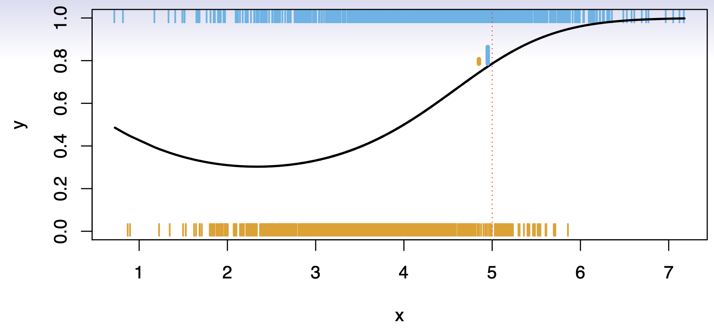
Consider a classification problem with \(K\) possible classes, numbered \(1, 2, \ldots, K\). Define
\[ p_k(x) = \Pr(Y = k \mid X = x), \quad k = 1, 2, \ldots, K. \]
These are the conditional class probabilities at \(x\); e.g. see little barplot at \(x=5\).
The Bayes optimal classifier at \(x\) is
\[ C(x) \;=\; j \quad \text{if} \quad p_j(x) = \max \{\,p_1(x),\, p_2(x),\, \dots,\, p_K(x)\}. \]
Nearest-Neighbor Averaging
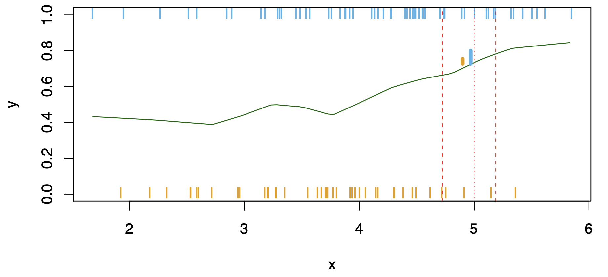
Nearest-neighbor averaging can be used as before.
Also breaks down as dimension grows. However, the impact on \(\hat{C}(x)\)is less than on \(\hat{p}_k(x)\), for \(k = 1,\ldots,K\).
Classification: Some Details
Typically we measure the performance of \(\hat{C}(x)\) using the misclassification error rate:
\[ \mathrm{Err}_{\mathrm{Te}} = \mathrm{Ave}_{i\in \mathrm{Te}} \bigl[I(y_i \neq \hat{C}(x_i))\bigr]. \]
The Bayes classifier (using the true \(p_k(x)\)) has the smallest error in the population.
Support-vector machines build structured models for \(\hat{C}(x)\).
We also build structured models for representing \(p_k(x)\). For example, logistic regression or generalized additive models.
Example: K-Nearest Neighbors in Two Dimensions
Below is an example data set in two dimensions \((X_1, X_2)\). Points shown in blue might represent one class, and points in orange the other. The dashed boundary suggests a decision boundary formed by a classifier.

KNN: K = 10
Here is the same data set classified by k-nearest neighbors with \(k = 10\). The black boundary line encloses the region of the feature space predicted as orange vs. blue, showing how the decision boundary has become smoother.
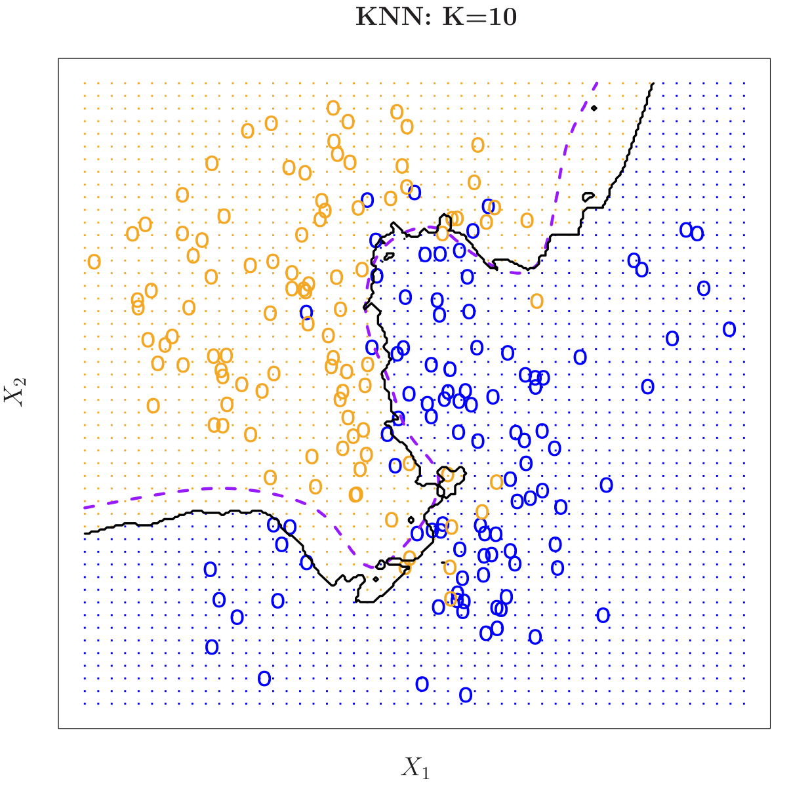
KNN: K = 1 vs. K = 100
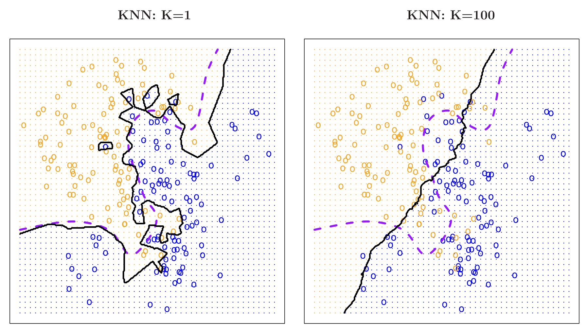
Comparisons of a very low value of \(k\) (left, \(k=1\)) versus a very high value (right, \(k=100\)).
\(k=1\): Overly flexible boundary that can overfit.
\(k=100\): Very smooth boundary that can underfit.
KNN Error Rates
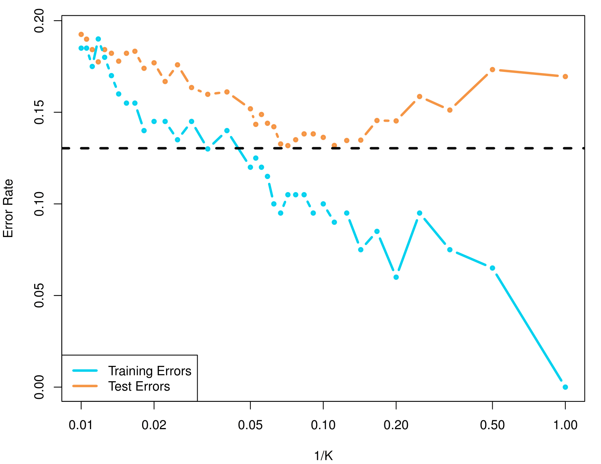
This figure illustrates how training errors (teal curve) and test errors (orange curve) change for a K-nearest neighbors (KNN) classifier as \(\frac{1}{K}\) varies.
For small \(K\) (i.e., large \(\frac{1}{K}\)), the model can become very flexible, often driving down training error but increasing overfitting and thus test error.
For large \(K\) (i.e., small \(\frac{1}{K}\)), the model becomes smoother, which can help avoid overfitting but sometimes leads to underfitting.
The dashed horizontal line (around 0.15) might indicate a baseline or reference error rate for comparison.
Summary
Summary
- XXXX
- XXXX